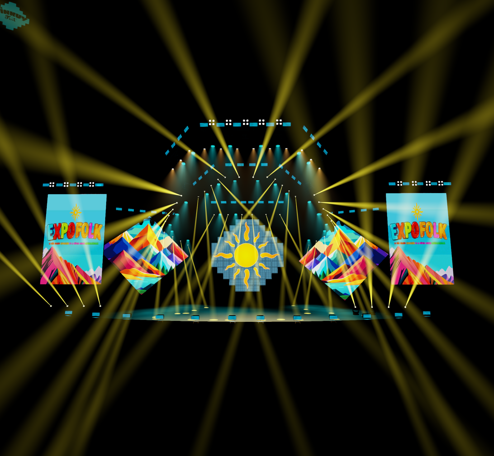

AMARANTA / EXPOFOLK
La luz también
es escenario.
200 metros lineales de tubos LED pixel, distribuidos en dos cortinas detrás de las pantallas en rombo.
Explora la propuesta ↓100 m detrás del rombo izquierdo · 100 m detrás del rombo derecho
Proporciones estimadas a partir del render y del video. Metrado definido: 200 m detrás de los rombos. Medidas y fijaciones por confirmar.
DOS REFERENCIAS, UNA PROPUESTA
La forma del render.
La luz del montaje real.
La composición de ExpoFolk guía las pantallas y los volúmenes. El antecedente de Amaranta guía el tubo suspendido, la profundidad y las secuencias pixel.

ExpoFolk · render de referencia
La forma del escenario se interpreta de manera proporcional; no es un plano acotado.
Amaranta · tubos LED pixel
Video de Instagram de LIGHTMAN. La publicación original menciona 320 tubos; esta propuesta contempla 200 metros lineales detrás de las dos pantallas en rombo.
DEL ESTUDIO AL MONTAJE
El siguiente paso es validar el plano de producción, el recorrido de los tubos y los puntos de soporte. Pantallas, estructuras y luces escénicas se muestran como contexto del escenario.
Estudio visual 02 · 200 m detrás de los rombos